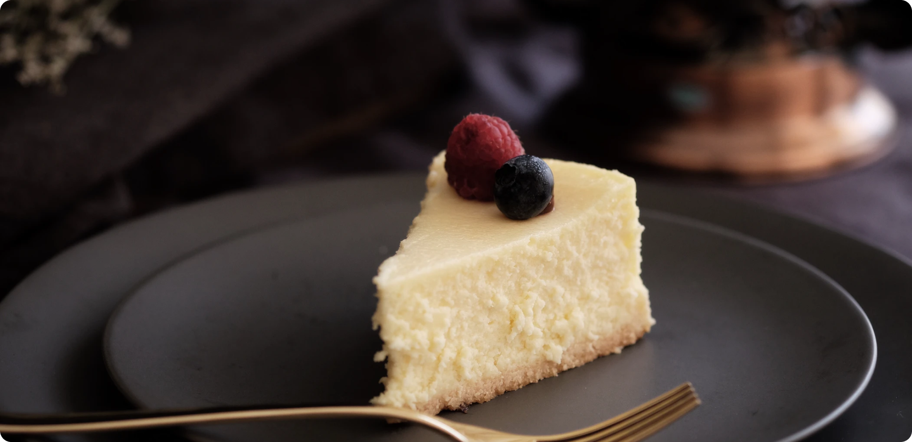

Look no further for a creamy and ultra smooth classic cheesecake recipe! Paired with a buttery grahm cracker crust, no one can deny its simple decadence. For the best results, back in a water bath.
